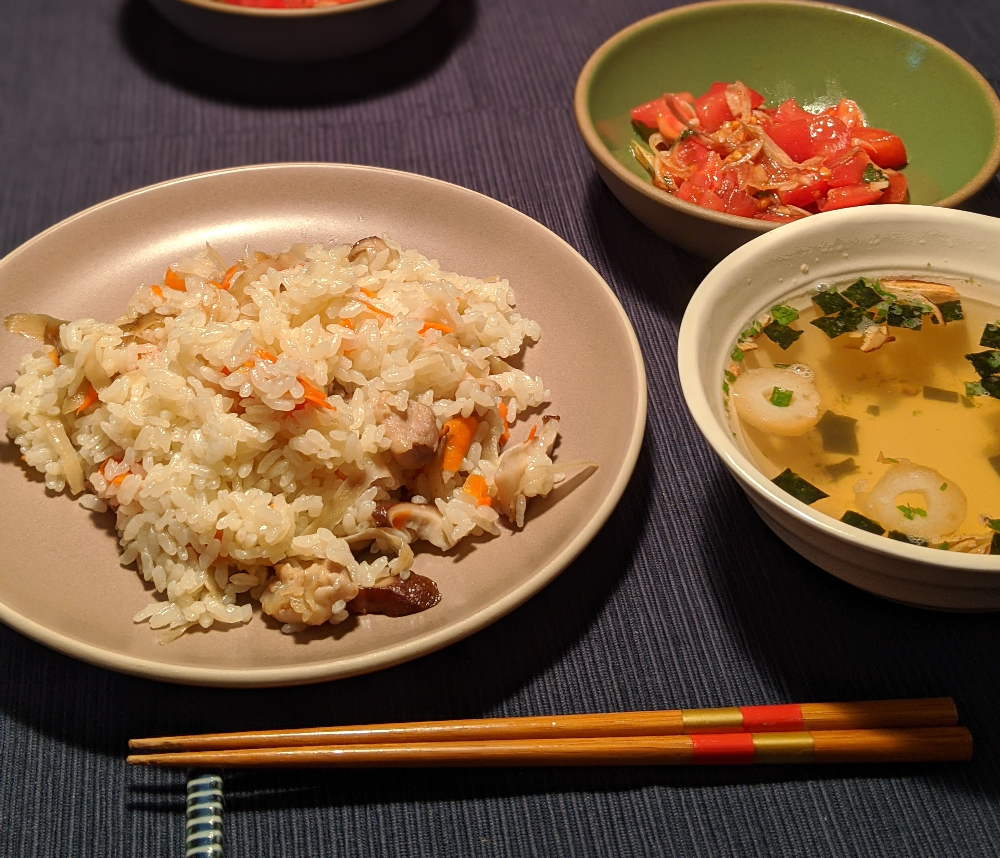

Diary
- Personal な status を更新するために区役所へ．区役所には自撮り棒の貸出サービスがあるようです．ちなみに，3月17日は「セント・パトリックス・デー」．
今日の夕飯：

キャベツたっぷり餃子，
トマトと茗荷と大葉のサラダ，
きゅうりの浅漬け
(2020/03/17)
- 先日「単体法は組合せ的な貪欲アルゴリズム」と書いたが，「組合せ的な局所探索アルゴリズム」の方がしっくりくる気もしてきた．T中君がB6君を購入した模様．
今日の夕飯：

カツオの漬け，
きゅうりの浅漬け，
プレモル
(2020/03/16)
- 昼過ぎに起きてから，夕飯の買物 & いちごの樹でケーキを購入．コロナの影響で在宅時間 & 料理をする機会が増えたので，夕飯を記録していくことにした．
今日の夕飯：

（母直伝）混ぜご飯，
お吸物，
トマトと茗荷のサラダ
(2020/03/15)
- 私事のためつくばへお出掛け．K野先生とY瀬先生にご馳走していただきました．(2020/03/14)
- 与えられた行列が copositive であるかどうかを判定する問題を MILP に定式化する論文を読み（Almost copositive という概念を知る），ついでに Gurobi で実装してみた．(2020/03/13)
- 昼食の間 twitter を眺めていたら，線形計画問題は組合せ最適化問題？という内容が話題になっていた．決定変数が連続値をとるので問題自体は連続最適化問題である … 一方で，基底変数と非基底変数を入れ替えながら解を更新する単体法は組合せ的な（貪欲）アルゴリズムといえる，というのが個人的な見解．(2020/03/11)
- 昨年末に頼まれていた査読を終わらせ報告書を提出．ToDo リストが空になったので，ようやく自分の研究に注力できそう．まずは卒論生との研究を3月中に論文にまとめて投稿先を決める． (2020/03/08)
- 日記（作業日誌+雑感）を再開することにしました．最後に書いたのが2016年3月だったので4年ぶりの更新．(2020/03/06)